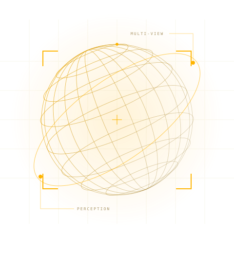

WW01 / PERCEPTION

A WORLD WORTH UNDERSTANDINGCOMPUTER
COMPUTER
VISION.
I'm a Principal Data Scientist at Walmart / Sam's Club, turning computer vision research into real-time systems. I hold a PhD from UC Riverside and share notes on vision and machine learning.
Ideas, experiments & things learned